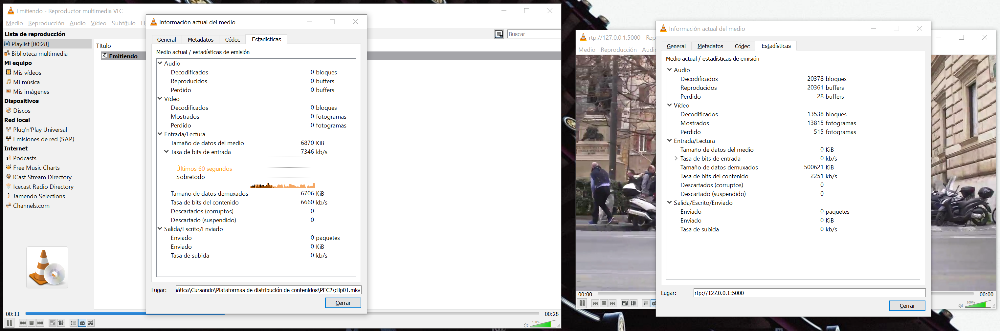
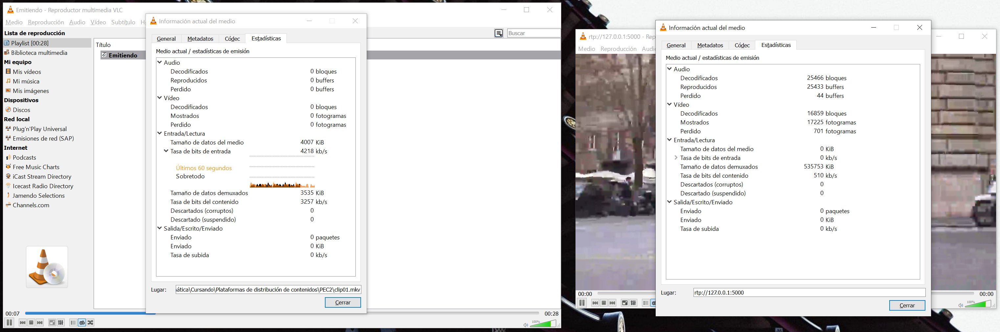
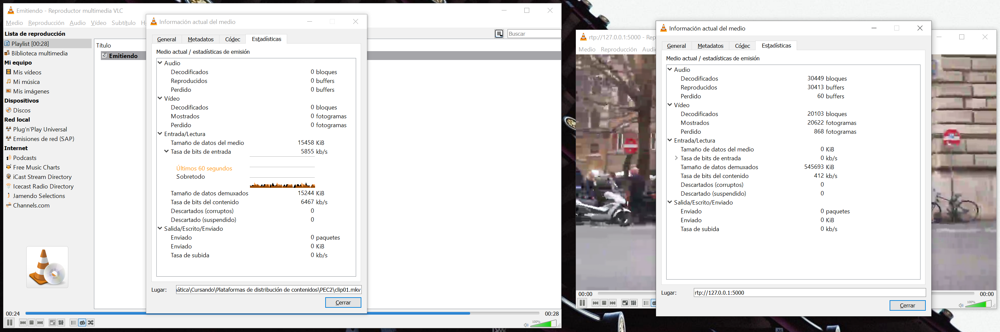
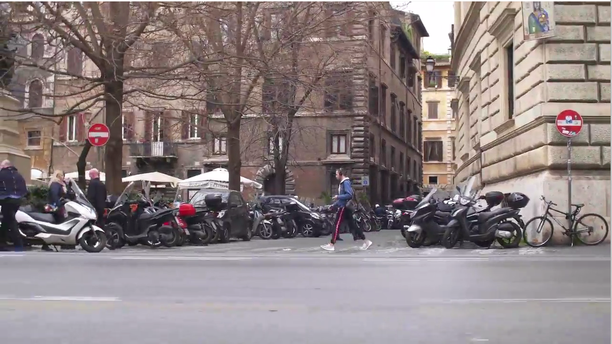
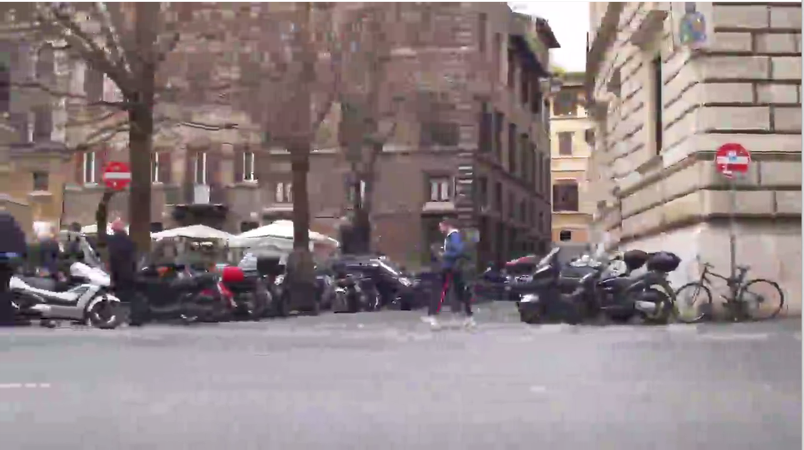

Tarea 2.7
Vuelve a seleccionar el contenedor que teníamos (H.264+Mp3), modifica la velocidad de vídeo a 2000 kbps, 500 kbps y 200 kbps (la de audio no la modifiques) (en Mac hay que rehacer la configuración del emisor). Haz una captura de pantalla de los dos VLC con sus ventanas de estadísticas abiertas en los tres casos y cópialas en el documento de la práctica. Al bajar la velocidad de transmisión fijada, ¿de qué manera visual se refleja la pérdida de calidad?
SEl hecho de reducir la tasa de bits de la emisión se refleja en las estadísticas de la ventana de VLC que recibe la emisión. Si bien la tasa oscila, cuando se emite con las tasas de bits de 2.000 kbit/s y 500 kbit/s, ese valor se refleja en las estadísticas de recepción.
No ocurre lo mismo cuando se emite con una tasa de 200 kbit/s. Cuando se emite con esta tasa las estadísticas de recepción siguen mostrando una tasa de bits del contenido que oscila alrededor de los 400 kbit/s probablemente debido a una limitación del códec y la imposibilidad de comprimir el clip de vídeo a la tasa demandada.
| Tasa de bits | Captura de pantalla |
|---|---|
| 2.000 kbit/s |  |
| 500 kbit/s |  |
| 200 kbit/s |  |
La reducción de la tasa de bits tiene un efecto muy notable en la calidad de imagen cuando esta se encuentra por debajo de los 2.000 kbit/s y se aprecian diversos defectos de compresión como son:
- Bloqueo (blocking): los bloques en los que se divide la imagen en el momento de la compresión se hacen visibles dando un aspecto de mosaico.
- Difuminado (blurring): se produce una pérdida de los detalles debido a durante la compresión se eliminan las componentes de alta frecuencia espacial.
- Bloques flotantes: durante los movimientos de cámara algunos bloques permanecen estáticos dando la sensación de que permanecen flotando en la imagen.
En la siguiente tabla se comparan cuatro imágenes procedentes del clip original y de los streams a diferentes tasas de bits donde se aprecia la degradación que sufre la calidad de imagen.
| Tasa de bits | Fotograma |
|---|---|
| Clip original (5.000 kbit/s) | |
| 2.000 kbit/s |  |
| 500 kbit/s |  |
| 200 kbit/s |